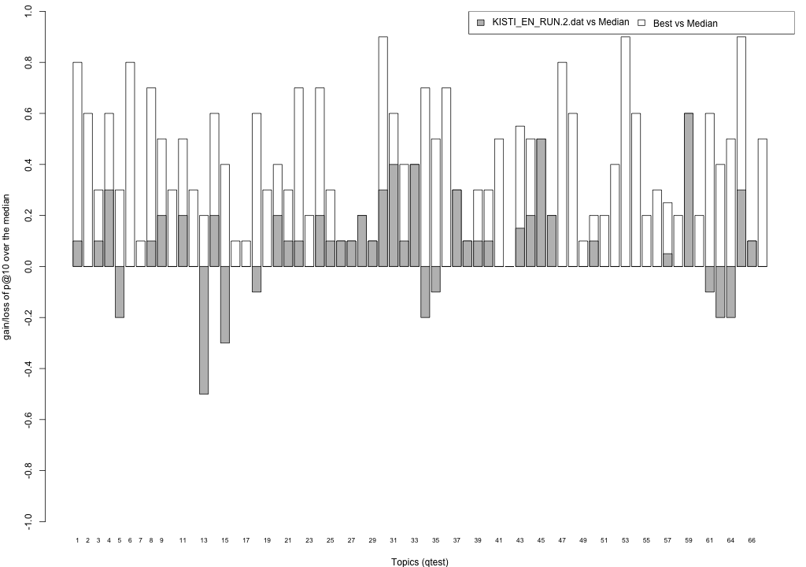

Share/CLEF eHealth 2015 TASK 2 Results - KISTI_EN_RUN
This page summarises the results obtained from your submissions. Here, you can find the mean performance of your submissions, for all standard trec_eval measures and for nDCG at different ranks. For this first year, the Share/CLEF eHealth 2015 TASK 2 built result pools from your submissions considering the top 10 documents ranked by your baseline system (run 1), and the two highest priority runs (run 2 and 3); thus all remaining runs were not sampled to form the assessment pool. This was because, unlike in previous years, submissions were greatly differing between each other, and thus lead to very large (and different) pools. As a consequence:
- the primary measure for this year is precision at 10 (P@10),
- the secondary measure is Normalised Discounted Cumulative Gain at rank 10 (ndcg_cut_10).
Relevance assessments are distributed along with this webpage and are also available from the task website. Assessors judged relevance according to a three point scale: Not Relevant (label 0), Somewhat Relevant (label 1), Highly Relevant (label 2). When computing binary relevance measures (e.g. P@10 and MAP), we mapped label 0 to not relevant, and labels 1 and 2 to relevant; this is encoded in the binary qrels named qrels.clef2015.test.bin.txt. Graded relevance assessments are contained in the qrels.clef2015.test.graded.txt file.
Evaluation with standard trec_eval metrics
These results have been obtained with the binary relevance assessment, i.e. qrels.clef2015.test.bin.txt, and trec_eval 9.0 as distributed by NIST. Trec_eval was ran as follows:
./trec_eval -c -M1000 qrels.clef2015.test.bin.txt runName
KISTI_EN_RUN.1.dat
runid all 0 num_q all 66 num_ret all 66000 num_rel all 1972 num_rel_ret all 1640 map all 0.2203 gm_map all 0.0823 Rprec all 0.2368 bpref all 0.2926 recip_rank all 0.5414 iprec_at_recall_0.00 all 0.5969 iprec_at_recall_0.10 all 0.5119 iprec_at_recall_0.20 all 0.3923 iprec_at_recall_0.30 all 0.3110 iprec_at_recall_0.40 all 0.2473 iprec_at_recall_0.50 all 0.2032 iprec_at_recall_0.60 all 0.1459 iprec_at_recall_0.70 all 0.1057 iprec_at_recall_0.80 all 0.0805 iprec_at_recall_0.90 all 0.0338 iprec_at_recall_1.00 all 0.0127 P_5 all 0.4152 P_10 all 0.3606 P_15 all 0.3263 P_20 all 0.2962 P_30 all 0.2535 P_100 all 0.1342 P_200 all 0.0864 P_500 all 0.0445 P_1000 all 0.0248
KISTI_EN_RUN.2.dat
runid all 0 num_q all 66 num_ret all 66000 num_rel all 1972 num_rel_ret all 1640 map all 0.2060 gm_map all 0.0809 Rprec all 0.2118 bpref all 0.2964 recip_rank all 0.5508 iprec_at_recall_0.00 all 0.5851 iprec_at_recall_0.10 all 0.4841 iprec_at_recall_0.20 all 0.3636 iprec_at_recall_0.30 all 0.2785 iprec_at_recall_0.40 all 0.2294 iprec_at_recall_0.50 all 0.1926 iprec_at_recall_0.60 all 0.1280 iprec_at_recall_0.70 all 0.0964 iprec_at_recall_0.80 all 0.0750 iprec_at_recall_0.90 all 0.0416 iprec_at_recall_1.00 all 0.0182 P_5 all 0.3758 P_10 all 0.3455 P_15 all 0.3030 P_20 all 0.2803 P_30 all 0.2298 P_100 all 0.1277 P_200 all 0.0812 P_500 all 0.0435 P_1000 all 0.0248
KISTI_EN_RUN.3.dat
runid all 0 num_q all 66 num_ret all 66000 num_rel all 1972 num_rel_ret all 1640 map all 0.2086 gm_map all 0.0740 Rprec all 0.2211 bpref all 0.2954 recip_rank all 0.5799 iprec_at_recall_0.00 all 0.6098 iprec_at_recall_0.10 all 0.4939 iprec_at_recall_0.20 all 0.3730 iprec_at_recall_0.30 all 0.2880 iprec_at_recall_0.40 all 0.2263 iprec_at_recall_0.50 all 0.1789 iprec_at_recall_0.60 all 0.1317 iprec_at_recall_0.70 all 0.0965 iprec_at_recall_0.80 all 0.0684 iprec_at_recall_0.90 all 0.0271 iprec_at_recall_1.00 all 0.0086 P_5 all 0.4121 P_10 all 0.3591 P_15 all 0.3333 P_20 all 0.2962 P_30 all 0.2424 P_100 all 0.1205 P_200 all 0.0775 P_500 all 0.0426 P_1000 all 0.0248
KISTI_EN_RUN.4.dat
runid all 0 num_q all 66 num_ret all 66000 num_rel all 1972 num_rel_ret all 1640 map all 0.2302 gm_map all 0.0838 Rprec all 0.2408 bpref all 0.3033 recip_rank all 0.5306 iprec_at_recall_0.00 all 0.5832 iprec_at_recall_0.10 all 0.5181 iprec_at_recall_0.20 all 0.4192 iprec_at_recall_0.30 all 0.3394 iprec_at_recall_0.40 all 0.2686 iprec_at_recall_0.50 all 0.2118 iprec_at_recall_0.60 all 0.1521 iprec_at_recall_0.70 all 0.1136 iprec_at_recall_0.80 all 0.0792 iprec_at_recall_0.90 all 0.0316 iprec_at_recall_1.00 all 0.0088 P_5 all 0.4152 P_10 all 0.3788 P_15 all 0.3535 P_20 all 0.3159 P_30 all 0.2677 P_100 all 0.1395 P_200 all 0.0886 P_500 all 0.0449 P_1000 all 0.0248
KISTI_EN_RUN.5.dat
runid all 0 num_q all 66 num_ret all 66000 num_rel all 1972 num_rel_ret all 1640 map all 0.2172 gm_map all 0.0839 Rprec all 0.2218 bpref all 0.3059 recip_rank all 0.5538 iprec_at_recall_0.00 all 0.5907 iprec_at_recall_0.10 all 0.5097 iprec_at_recall_0.20 all 0.3905 iprec_at_recall_0.30 all 0.3048 iprec_at_recall_0.40 all 0.2356 iprec_at_recall_0.50 all 0.2009 iprec_at_recall_0.60 all 0.1346 iprec_at_recall_0.70 all 0.1027 iprec_at_recall_0.80 all 0.0740 iprec_at_recall_0.90 all 0.0378 iprec_at_recall_1.00 all 0.0155 P_5 all 0.4030 P_10 all 0.3606 P_15 all 0.3242 P_20 all 0.2879 P_30 all 0.2455 P_100 all 0.1352 P_200 all 0.0846 P_500 all 0.0448 P_1000 all 0.0248
KISTI_EN_RUN.6.dat
runid all 0 num_q all 66 num_ret all 66000 num_rel all 1972 num_rel_ret all 1640 map all 0.2207 gm_map all 0.0751 Rprec all 0.2280 bpref all 0.3060 recip_rank all 0.5343 iprec_at_recall_0.00 all 0.5822 iprec_at_recall_0.10 all 0.5178 iprec_at_recall_0.20 all 0.4016 iprec_at_recall_0.30 all 0.3315 iprec_at_recall_0.40 all 0.2412 iprec_at_recall_0.50 all 0.1966 iprec_at_recall_0.60 all 0.1349 iprec_at_recall_0.70 all 0.1085 iprec_at_recall_0.80 all 0.0743 iprec_at_recall_0.90 all 0.0267 iprec_at_recall_1.00 all 0.0058 P_5 all 0.4242 P_10 all 0.3864 P_15 all 0.3495 P_20 all 0.3121 P_30 all 0.2556 P_100 all 0.1285 P_200 all 0.0817 P_500 all 0.0438 P_1000 all 0.0248
KISTI_EN_RUN.7.dat
runid all 0 num_q all 66 num_ret all 66000 num_rel all 1972 num_rel_ret all 1640 map all 0.2276 gm_map all 0.0880 Rprec all 0.2346 bpref all 0.3103 recip_rank all 0.5695 iprec_at_recall_0.00 all 0.6085 iprec_at_recall_0.10 all 0.5167 iprec_at_recall_0.20 all 0.4157 iprec_at_recall_0.30 all 0.3241 iprec_at_recall_0.40 all 0.2497 iprec_at_recall_0.50 all 0.2102 iprec_at_recall_0.60 all 0.1459 iprec_at_recall_0.70 all 0.1076 iprec_at_recall_0.80 all 0.0758 iprec_at_recall_0.90 all 0.0349 iprec_at_recall_1.00 all 0.0119 P_5 all 0.4121 P_10 all 0.3727 P_15 all 0.3283 P_20 all 0.2992 P_30 all 0.2545 P_100 all 0.1359 P_200 all 0.0851 P_500 all 0.0448 P_1000 all 0.0248
KISTI_EN_RUN.8.dat
runid all 0 num_q all 66 num_ret all 66000 num_rel all 1972 num_rel_ret all 1640 map all 0.2207 gm_map all 0.0751 Rprec all 0.2280 bpref all 0.3060 recip_rank all 0.5343 iprec_at_recall_0.00 all 0.5822 iprec_at_recall_0.10 all 0.5178 iprec_at_recall_0.20 all 0.4016 iprec_at_recall_0.30 all 0.3315 iprec_at_recall_0.40 all 0.2412 iprec_at_recall_0.50 all 0.1966 iprec_at_recall_0.60 all 0.1349 iprec_at_recall_0.70 all 0.1085 iprec_at_recall_0.80 all 0.0743 iprec_at_recall_0.90 all 0.0267 iprec_at_recall_1.00 all 0.0058 P_5 all 0.4242 P_10 all 0.3864 P_15 all 0.3495 P_20 all 0.3121 P_30 all 0.2556 P_100 all 0.1285 P_200 all 0.0817 P_500 all 0.0438 P_1000 all 0.0248
Evaluation with nDCG
These results have been obtained with the graded relevance assessment, i.e. qrels.clef2015.test.graded.txt, and trec_eval 9.0 as distributed by NIST.To obtain nDCG at different ranks, trec_eval was ran as follows:
./trec_eval -c -M1000 -m ndcg_cut qrels.clef2015.test.graded.txt runName
This computes nDCG according to Jarvelin and Kekalainen (ACM ToIS v. 20, pp. 422-446, 2002). Gain values are the relevance values in the qrels file (i.e. label 0 corresponds to gain 0, label 1 to gain 1 and label 2 to gain 2).
KISTI_EN_RUN.1.dat
ndcg_cut_5 all 0.3415 ndcg_cut_10 all 0.3352 ndcg_cut_15 all 0.3280 ndcg_cut_20 all 0.3186 ndcg_cut_30 all 0.3139 ndcg_cut_100 all 0.3576 ndcg_cut_200 all 0.4014 ndcg_cut_500 all 0.4477 ndcg_cut_1000 all 0.4721
KISTI_EN_RUN.2.dat
ndcg_cut_5 all 0.3200 ndcg_cut_10 all 0.3223 ndcg_cut_15 all 0.3117 ndcg_cut_20 all 0.3079 ndcg_cut_30 all 0.2999 ndcg_cut_100 all 0.3440 ndcg_cut_200 all 0.3849 ndcg_cut_500 all 0.4382 ndcg_cut_1000 all 0.4648
KISTI_EN_RUN.3.dat
ndcg_cut_5 all 0.3565 ndcg_cut_10 all 0.3395 ndcg_cut_15 all 0.3395 ndcg_cut_20 all 0.3257 ndcg_cut_30 all 0.3129 ndcg_cut_100 all 0.3380 ndcg_cut_200 all 0.3819 ndcg_cut_500 all 0.4351 ndcg_cut_1000 all 0.4667
KISTI_EN_RUN.4.dat
ndcg_cut_5 all 0.3377 ndcg_cut_10 all 0.3424 ndcg_cut_15 all 0.3402 ndcg_cut_20 all 0.3304 ndcg_cut_30 all 0.3231 ndcg_cut_100 all 0.3625 ndcg_cut_200 all 0.4091 ndcg_cut_500 all 0.4551 ndcg_cut_1000 all 0.4761
KISTI_EN_RUN.5.dat
ndcg_cut_5 all 0.3333 ndcg_cut_10 all 0.3362 ndcg_cut_15 all 0.3256 ndcg_cut_20 all 0.3169 ndcg_cut_30 all 0.3124 ndcg_cut_100 all 0.3552 ndcg_cut_200 all 0.3952 ndcg_cut_500 all 0.4494 ndcg_cut_1000 all 0.4713
KISTI_EN_RUN.6.dat
ndcg_cut_5 all 0.3451 ndcg_cut_10 all 0.3464 ndcg_cut_15 all 0.3382 ndcg_cut_20 all 0.3265 ndcg_cut_30 all 0.3187 ndcg_cut_100 all 0.3449 ndcg_cut_200 all 0.3907 ndcg_cut_500 all 0.4418 ndcg_cut_1000 all 0.4691
KISTI_EN_RUN.7.dat
ndcg_cut_5 all 0.3462 ndcg_cut_10 all 0.3459 ndcg_cut_15 all 0.3306 ndcg_cut_20 all 0.3272 ndcg_cut_30 all 0.3216 ndcg_cut_100 all 0.3635 ndcg_cut_200 all 0.4064 ndcg_cut_500 all 0.4568 ndcg_cut_1000 all 0.4792
KISTI_EN_RUN.8.dat
ndcg_cut_5 all 0.3451 ndcg_cut_10 all 0.3464 ndcg_cut_15 all 0.3382 ndcg_cut_20 all 0.3265 ndcg_cut_30 all 0.3187 ndcg_cut_100 all 0.3449 ndcg_cut_200 all 0.3907 ndcg_cut_500 all 0.4418 ndcg_cut_1000 all 0.4691
Readability-biased evaluation
For this year task, we have considered the factor of understandability of information (or readability) within the evaluation of the submissions, along with the topicality factor (normally referred to as (topical) relevance). Thus, along with (topical) relevance assessments (qrels), we have collected readability assessments (qread). These assessments were provided by judges along with the relevance assessments; however readability was assumed to be assessed independently of (topical) relevance. To account for understandability/readability in the evaluation, we have computed an understandability biased measure, uRBP, as defined in Zuccon&Koopman, "Integrating understandability in the evaluation of consumer health search engines", MedIR 2014. We refer to that publication for the motivations and the details of the measure; note however that we did not use automated readability measures to estimate readability - we instead had actual readability assessments from the relevance assessors. Readability assessments were given on a 4 point scale (from 0 to 3): It is very technical and difficult to read and understand (label 0), It is somewhat technical and difficult to read and understand (label 1), It is somewhat easy to read and understand (label 2), It is very easy to read and understand (label 3).
The results below have been obtained with the binary relevance assessments (i.e. qrels.clef2015.test.bin.txt) and the graded readability assessments (i.e. i.e. qread.clef2015.test.graded.txt), and ubire-v0.1.0 as distributed on GitHub.The tool was ran as follows:
java -jar /tools/ubire.0.1.jar --qrels-file=qrels/qrels.clef2015.test.bin.txt --qread-file=qrels/qread.clef2015.test.graded.txt --readability --rbp-p=0.8 --ranking-file=runName
This computes RBP, and two versions of uRBP. The user persistence parameter p of RBP (and uRBP) was set to 0.8 following Park&Zhang, "On the distribution of user persistence for rank-biased precision", ADCS 2007. uRBP has been computed by using user model 1 of Zuccon&Koopman with threshold=2, i.e. documents with a readability score of 0 or 1 where deemed not readable and thus had P(U|k)=0, while documents with a readability score of 2 or 3 where deemed readable and thus had P(U|k)=1. uRBPgr has been computed by mapping graded readability scores to different probability values, in particular: readability of 0 was assigned P(U|k)=0, readability of 1 was assigned P(U|k)=0.4, readability of 2 was assigned P(U|k)=0.8, readability of 3 was assigned P(U|k)=1.Note that we are still experimenting with these readability-biased measures and thus observations made with the provided measures may not be conclusive.
KISTI_EN_RUN.1.dat
RBP(0.8) all 0.3222 uRBP(0.8) all 0.2593 uRBPgr(0.8) all 0.2646
KISTI_EN_RUN.2.dat
RBP(0.8) all 0.3038 uRBP(0.8) all 0.2607 uRBPgr(0.8) all 0.2614
KISTI_EN_RUN.3.dat
RBP(0.8) all 0.3295 uRBP(0.8) all 0.2596 uRBPgr(0.8) all 0.2666
KISTI_EN_RUN.4.dat
RBP(0.8) all 0.3306 uRBP(0.8) all 0.2644 uRBPgr(0.8) all 0.2709
KISTI_EN_RUN.5.dat
RBP(0.8) all 0.3203 uRBP(0.8) all 0.2702 uRBPgr(0.8) all 0.2725
KISTI_EN_RUN.6.dat
RBP(0.8) all 0.3332 uRBP(0.8) all 0.2607 uRBPgr(0.8) all 0.2695
KISTI_EN_RUN.7.dat
RBP(0.8) all 0.3299 uRBP(0.8) all 0.2703 uRBPgr(0.8) all 0.2739
KISTI_EN_RUN.8.dat
RBP(0.8) all 0.3332 uRBP(0.8) all 0.2607 uRBPgr(0.8) all 0.2695
Plots P@10
The plots below compare each of your runs against the median and best performance (p@10) across all systems submitted to CLEF for each query topic. In particular, for each query, the height of a bar represents the gain/loss of your system and the best system (for that query) over the median system. The height of a bar is then given by:
grey bars: height(q) = your_p@10(q) - median_p@10(q) white bars: height(q) = best_p@10(q) - median_p@10(q)
KISTI_EN_RUN.1.dat
KISTI_EN_RUN.2.dat
KISTI_EN_RUN.3.dat